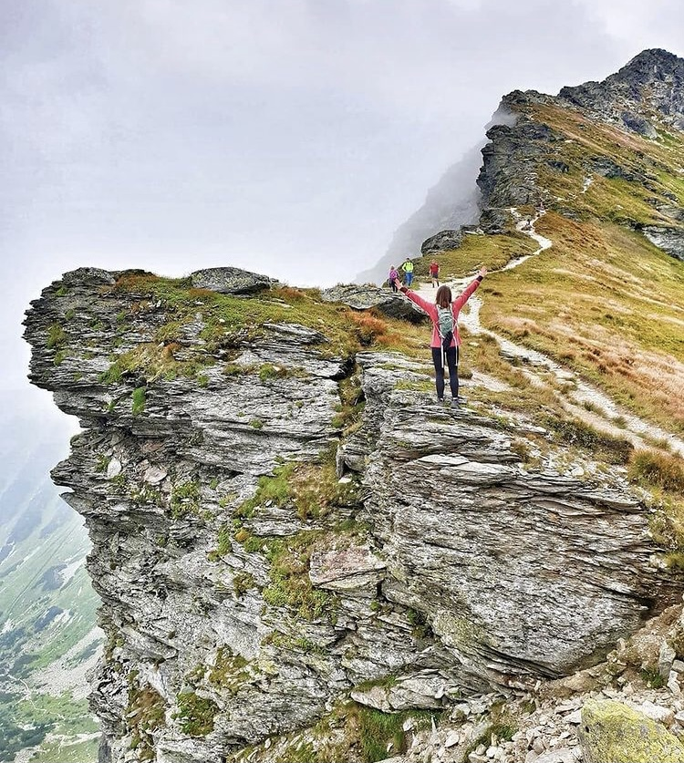
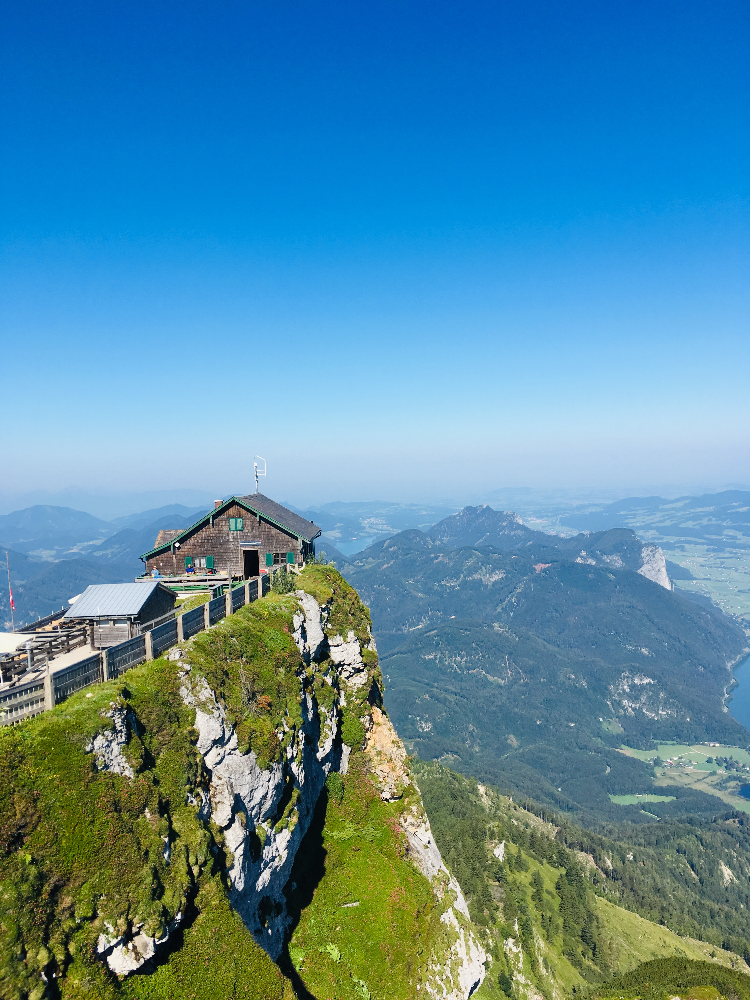

V Thajsku jsem byla v únoru 2020, byla to jedna z nejlepších dovolených. Byly jsme s kamarádkou Kamčou a dovolenou jsme pojaly opravdu cestovatelsky. Navštívily jsme celkem 4 ostrovy a na závěr jsme si užily 4 dny v Bangkoku. Hned jak půjde cestovat, tak se tam ráda znovu podívám.
Na Slovensku jsem byla na týdenní dovolené s rodiči. Dala jsem jim tento pobyt jako dárek k Vánocům. Užili jsme si společný čas a procestovali jsme Tatry křížem krážem.
Rakousko a Německo spojím dohromady. Tyto země jsem navštivila s kamarádkama Klárkou a Šveckou. Byla to taková punková dovolená. Neměly jsme žádné ubytování, pouze auto, stan a samy sebe a musím říct že to bylo super. Hodně jsme toho nachodily ale i jsme navštívily spousty krásných měst a jezer. A dobře, přiznám se, jednu noc jsme si na poslední chvíly zamluvily nádherný hotel se saunou na balkoně.